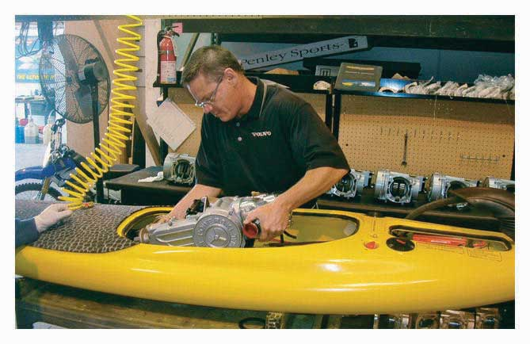

What do you do if you get it home and your brand-new DVD player doesn’t work? What if you were late for class because it took you twenty minutes to get a burger and order of fries at the drive-through window of a fast-food restaurant? Like most people, you’d probably be more or less disgruntled. As a customer, you’re constantly assured that when products make it to market, they’re of the highest possible quality, and you tend to avoid brands that have failed to live up to your expectations or to producers’ claims. You’re told that workers in such businesses as restaurants are there to serve you, and you probably don’t go back to establishments where you’ve received poor-quality service.
But what is quality? According to the American Society for Quality, qualityAbility of a product to satisfy customer needs. refers to “the characteristics of a product or service that bear on its ability to satisfy stated or implied needs.”“Basic Concepts, Definitions,” American Society of Quality, http://asq.org/glossary/q.html (accessed November 3, 2011). When you buy a DVD player, you expect it to play DVDs. When it doesn’t, you question its quality. When you go to a drive-through window, you expect to be served in a reasonable amount of time. If you’re forced to wait, you conclude that you’re the victim of poor-quality service.
To compete today, companies must deliver quality goods and services that satisfy customers’ needs. This is the objective of quality management. Total quality management (TQM)All the steps taken by a company to ensure that its products satisfy customer needs., or quality assurance, includes all the steps that a company takes to ensure that its goods or services are of sufficiently high quality to meet customers’ needs. Generally speaking, a company adheres to TQM principles by focusing on three tasks:
Let’s take a closer look at these three principles.
Companies that are committed to TQM understand that the purpose of a business is to generate a profit by satisfying customer needs. Thus, they let their customers define quality by identifying and offering those product features that satisfy customer needs. They encourage customers to tell them how to make the right products, both goods and services, that work the right way.
Armed with this knowledge, they take steps to make sure that providing quality is a factor in every facet of their operations—from design, to product planning and control, to sales and service. To get feedback on how well they’re doing, many companies routinely use surveys and other methods to monitor customer satisfaction. By tracking the results of feedback over time, they can see where they need to improve.
Successful TQM requires that everyone in the organization, not simply upper-level management, commits to satisfying the customer. When customers wait too long at a drive-through window, it’s the responsibility of a number of employees, not the manager alone. A defective DVD isn’t solely the responsibility of the manufacturer’s quality control department; it’s the responsibility of every employee involved in its design, production, and even shipping. To get everyone involved in the drive for quality assurance, managers must communicate the importance of quality to subordinates and motivate them to focus on customer satisfaction. Employees have to be properly trained not only to do their jobs but also to detect and correct quality problems.
In many companies, employees who perform similar jobs work as teams, sometimes called quality circlesEmployees who perform similar jobs and work as teams to identify quality, efficiency, and other work-related problems; to propose solutions; and to work with management in implementing their recommendations., to identify quality, efficiency, and other work-related problems, to propose solutions, and to work with management in implementing their recommendations.
An integral part of TQM is continuous improvementCompany’s commitment to making constant improvements in the design, production, and delivery of its products.: the commitment to making constant improvements in the design, production, and delivery of goods and services. Improvements can almost always be made to increase efficiency, reduce costs, and improve customer service and satisfaction. Everyone in the organization is constantly on the lookout for ways to do things better.
Companies can use a variety of tools to identify areas for improvement. A common approach in manufacturing is called statistical process controlTechnique for monitoring production quality by testing sample outputs to ensure that they meet specifications.. This technique monitors production quality by testing a sample of output to see whether goods in process are being made according to predetermined specifications.
Assume for a moment that you work for Kellogg’s, the maker of Raisin Bran cereal. You know that it’s the company’s goal to pack two scoops of raisins in every box of cereal. How can you test to determine whether this goal is being met? You could use a statistical process control method called a sampling distribution. On a periodic basis, you would take a box of cereal off the production line and measure the amount of raisins in the box. Then you’d record that amount on a control chart designed to compare actual quantities of raisins with the desired quantity (two scoops). If your chart shows that several samples in a row are low on raisins, you’d shut down the production line and take corrective action.
Sometimes it also helps to look outside the organization for ideas on how to improve operations and to learn how your company compares with others. Companies routinely use benchmarkingPractice of comparing a company’s own performance with that of a company that excels in the same activity. to compare their performance on a number of dimensions with the performance of other companies that excel in particular areas. Frequent benchmark targets include L.L. Bean, for its superior performance in filling orders; 3M, for its record of introducing innovative products; Motorola, for its success in maintaining consistent quality standards; and Mary Kay Cosmetics, for its skills in inventory control.Charles J. Nuese, Building the Right Things Right (New York: Quality Resources, 1995), 102.
As a consumer, wouldn’t you like to know which companies ensure that their products meet quality specifications? Some of us would like to know which companies take steps to protect the environment. Some consumers want to know which companies continuously improve their performance in both of these areas—that is, practice both quality management and environmental management. By the same token, if you were a company doing a good job in these areas, wouldn’t you want potential customers to know? It might be worth your while to find out whether your suppliers were also being conscientious in these areas—and even your suppliers’ suppliers.
Through the International Organization for Standardization (ISO), a nongovernmental agency based in Switzerland, it’s possible to find this kind of information. The resources of this organization will enable you to identify those organizations that have people and processes in place for delivering products that satisfy customers’ quality requirements. You can also find out which organizations work to reduce the negative impact of their activities on the environment. Working with representatives from various countries, the organization has established the ISO 9000Set of international quality standards established by the International Organization for Standardization. family of international standards for quality management and the ISO 14000Set of international standards for environmental management established by the International Organization for Standardization. family of international standards for environmental management.
ISO standards focus on the way a company does its work, not on its output (though there’s certainly a strong correlation between the way in which a business functions and the quality of its products). Compliance with ISO standards is voluntary, and the certification process is time-consuming and complex. Even so, hundreds of thousands of organizations around the world are ISO 9000 and ISO 14000 certified.“ISO Survey of Certifications,” 2009 International Organization for Standardization, http://www.iso.org/iso/survey2009.pdf (accessed November 2, 2011). ISO certification has become an internationally recognized symbol of quality management and is almost essential to be competitive in the global marketplace.
PowerSki’s Web site states that “PowerSki International has been founded to bring a new watercraft, the PowerSki Jetboard, and the engine technology behind it, to market.”“About PowerSki International,” PowerSki, http://www.powerski.com/aboutpsi.htm (accessed November 3, 2011). That goal was reached in May 2003, when the firm emerged from a lengthy design period. Having already garnered praise for its innovative product, PowerSki was ready to begin mass-producing Jetboards. At this juncture, the management team made a strategic decision that’s not uncommon in manufacturing today. Rather than producing Jetboards in-house, they opted for outsourcingPractice of using outside vendors to manufacture all or part of a company’s actual products.: having outside vendors manufacture the engines, fiberglass hulls, and associated parts. Assembly of the final product took place in a manufacturing facility owned by All American Power Sports in Moses Lake, Washington. This decision doesn’t mean that the company relinquished control over quality; in fact, every component that goes into the PowerSki Jetboard is manufactured to exact specifications set by PowerSki. One advantage of outsourcing its production function is that the management team can thereby devote its attention to refining its product design and designing future products.
Figure 11.12
Outsourcing the production of its engines, hulls, and other components enables PowerSki to reduce the cost of producing each Jetboard through manufacturing efficiencies and lower labor costs. All components that go into the Jetboard are made to PowerSki’s specifications and are inspected upon arrival to ensure that they meet the company’s high-quality standards.
Understandably, outsourcing is becoming an increasingly popular option among manufacturers. For one thing, few companies have either the expertise or the inclination to produce everything needed to make a product. Today, more firms, like PowerSki, want to specialize in the processes that they perform best—and outsource the rest. Like PowerSki, they also want to take advantage of outsourcing by linking up with suppliers located in regions with lower labor costs.
Outsourcing is by no means limited to the manufacturing sector. Service companies also outsource many of their noncore functions. Your school, for instance, probably outsources such functions as food services, maintenance, bookstore sales, printing, groundskeeping, security, information-technology (IT) support, and even residence operations.
(AACSB) Analysis
You know that organizations adhering to the principles of TQM focus on three tasks: customer satisfaction, employee involvement, and continuous improvement. Think about the course-registration process at your school. Does the process appear to be managed according to TQM principles? Is it designed to satisfy the customer (you)? Do employees in the registrar’s office, as well as others involved in the process, focus on customer satisfaction? Does anyone seem to be on the lookout for ways to do things better?
(AACSB) Analysis
Ever wonder how Coca-Cola is made? Go to http://www.coca-colabottling.co.id/eng/ourbusiness/index.php?act=virtualplant to link to Coca-Cola’s Web site to learn how the soda drink is made (and get to play a few games on http://www.coca-colabottling.co.id/eng/funstuff/index.php?act=games). After gaining an understanding of the production process to make the soda, pretend that you’ve just been hired by Coca-Cola as operations manager for a new bottling plant. Your first assignment is to set up a plant somewhere in the United States. Next, identify the planning decisions you’d make and indicate what you would decide. Now, fast-forward two years to the point where the plant is up and running. What responsibilities do you have at this point? What technologies do you use to make your job easier? Finally, quality control is vital to Coca-Cola. What activities are you responsible for that ensure that the soda made at your plant meets Coca-Cola’s strict quality standards?